САНАТОРИЙ «КАТУНЬ»
Процедуры
С заботой о вашем здоровье
Какие процедуры есть в «Катуни» и как они проходят? Здесь можно познакомиться с ними, а на приёме обсудить с врачом, что подойдёт вам.
Выбрать процедуру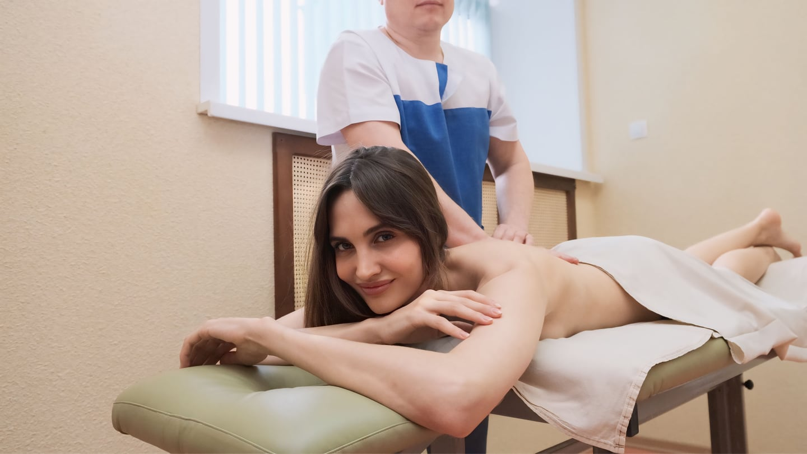
исследований
ванн
процедур
ЛЕЧЕНИЕ И ВОССТАНОВЛЕНИЕ
Каталог процедур
ДиагностикаИсследования для индивидуальной программы5 исследований
Электрокардиография (ЭКГ)
Регистрация электрической активности сердца с помощью электродов, которые прикрепляют к коже. Результат исследования оценивает врач.
Кардиоритмография (КРГ)
Исследование сердечного ритма для оценки регуляции сердечно-сосудистой системы и адаптационных возможностей организма.
Фиброгастродуоденоскопия (ФГДС)
Врач с помощью эндоскопа осматривает слизистую пищевода, желудка и двенадцатиперстной кишки. Подготовку к исследованию необходимо уточнить заранее.
Холтеровское мониторирование ЭКГ
Непрерывная запись сердечного ритма в течение 24–48 часов. Исследование помогает врачу оценить работу сердца в повседневной жизни.
Диагностика хеликобактерной инфекции
Дыхательный тест для выявления Helicobacter pylori. Порядок подготовки и возможность проведения исследования определяет специалист.
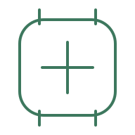
ФизиотерапияАппаратные методики и природные факторы10 процедур
Магнитотерапия
Физиотерапевтическая процедура с воздействием магнитного поля. Местную или общую методику подбирают по назначению врача.
Лекарственный электрофорез
Введение лекарственных веществ через кожу с помощью постоянного электрического тока. Препарат, область воздействия и курс назначает врач.
Лазеротерапия
Физиотерапевтическое воздействие низкоинтенсивным лазерным излучением. Методика и параметры процедуры подбираются индивидуально.
Лазеротерапия «МИЛТА»
Аппаратная физиотерапия по кардиометаболической методике. Возможность включения процедуры в программу определяет лечащий врач.
Ультрафиолетовое облучение (УФО)
Дозированное воздействие ультрафиолетового излучения на участки кожи или слизистых. Проводится по медицинским показаниям.
СМТ-терапия
Метод физиотерапии с применением синусоидальных модулированных токов. Область воздействия и режим процедуры назначает врач.
Ультразвуковая терапия
Локальное воздействие ультразвуковыми волнами. Параметры и продолжительность курса определяют с учётом состояния пациента.
Дарсонвализация
Аппаратная процедура с использованием высокочастотного импульсного тока. Проводится по назначению специалиста.
ДМВ-терапия
Физиотерапевтический метод воздействия электромагнитными волнами дециметрового диапазона.
Малые радоновые процедуры
Виды процедур, показания и возможность назначения уточните у лечащего врача санатория.
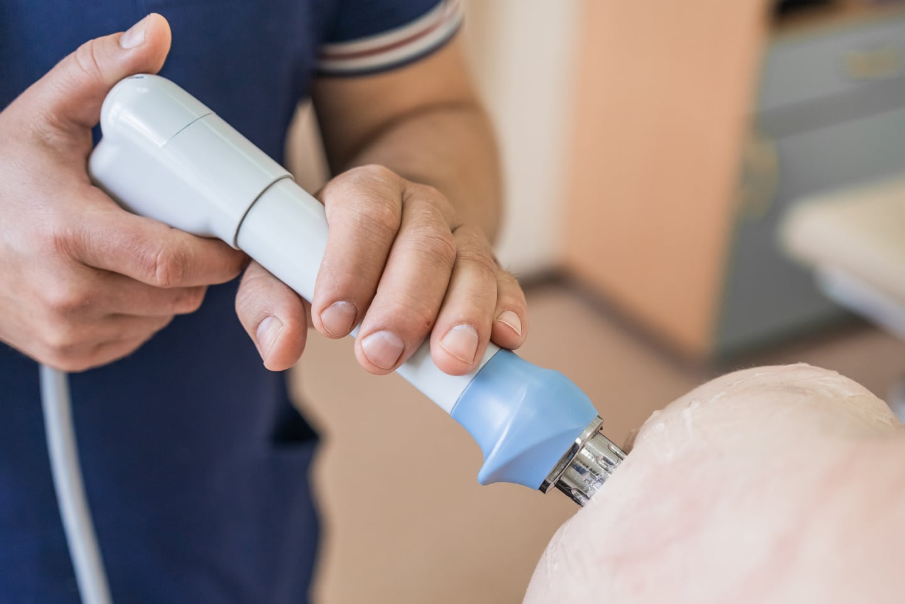
Специализированные процедурыДополнение к назначенному курсу лечения14 процедур
Подводное вытяжение позвоночника
Горизонтальное вытяжение позвоночника в пресной или минеральной воде. Нагрузку и режим процедуры определяет специалист.
Лечебная механотерапия в минеральном бассейне
Занятия на подводных тренажёрах в бассейне с минеральной водой. Нагрузка подбирается в рамках индивидуальной лечебной программы.
Ударно-волновая терапия
Аппаратное воздействие акустическими волнами на выбранную область. В санатории применяются аппараты ShockMaster 500 и BTL. Перед курсом необходима консультация невролога.
Внутритканевая электростимуляция
Методика А. А. Герасимова с применением электрических импульсов и электродов. Процедуру назначает врач, который определяет точки воздействия и параметры курса.
Криотерапия
Кратковременное воздействие сухим охлаждённым воздухом в криокапсуле. Перед процедурой необходима консультация врача; режим подбирается индивидуально.
Карбокситерапия
Процедура с подкожным введением медицинского углекислого газа. Область воздействия и курс определяет врач после консультации.
Озонотерапия
Внутривенное введение озонированного физиологического раствора. Возможность проведения, состав программы и курс обсуждаются с лечащим врачом.
Прессотерапия Doctor Life MK300
Аппаратный массаж с последовательной подачей сжатого воздуха в специальные манжеты. Режим процедуры выбирает специалист.
«Мультимаг»
Возможность включения процедуры в индивидуальную программу, её параметры и продолжительность уточните у лечащего врача.
Грязевые аппликации
Местные аппликации сульфидно-иловой грязи Мамонтовского месторождения Алтайского края. Подготовленную грязь наносят на назначенную врачом область.
IV-терапия
Внутривенное капельное введение препаратов. Состав, показания и длительность курса определяет врач индивидуально; самостоятельно выбирать программу не следует.
Гирудотерапия
Процедура с использованием медицинских пиявок. Проводится специалистом после оценки показаний и противопоказаний.
Рефлексотерапия
Воздействие специальными иглами на выбранные точки тела. Перед курсом необходима консультация врача-рефлексотерапевта.
Орошения минеральной водой
Местные процедуры с минеральной водой: орошения головы, дёсен и глаз. Конкретную методику назначает врач.
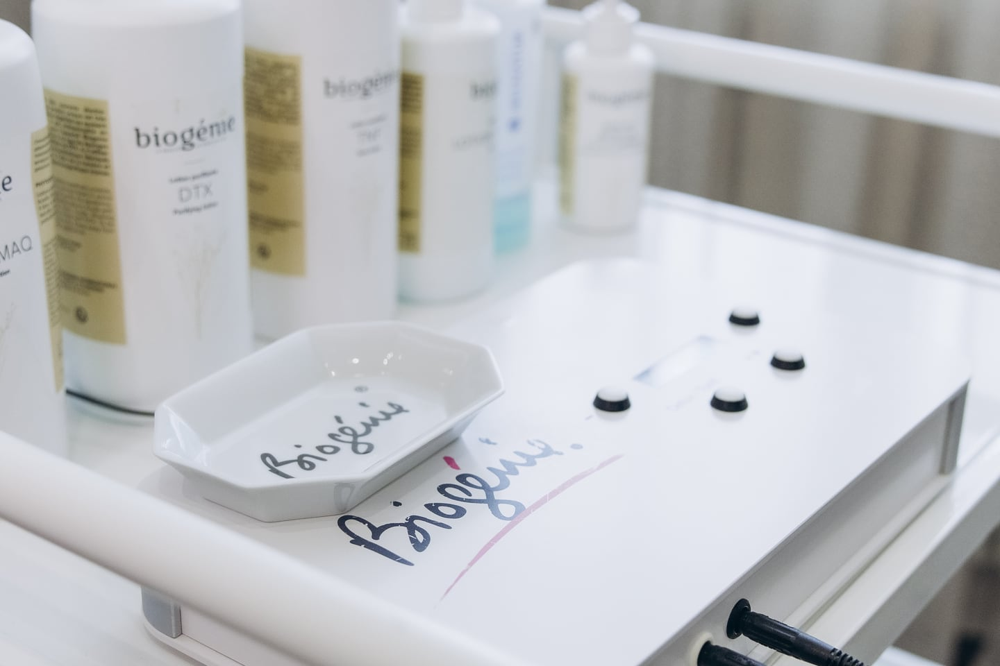
КосметологияБережный уход за кожей лица12 процедур
Эстетическая карбокситерапия
Инъекционная косметологическая процедура с медицинским углекислым газом. Область воздействия и программу ухода определяет специалист после консультации.
CORTEXIL PRP-терапия
Процедура с применением плазмы собственной крови пациента, обогащённой тромбоцитами. Проводится после консультации и оценки противопоказаний.
Микротоковая терапия Biogenie
Аппаратный уход с использованием микротоков и косметических средств. Программа включает обработку кожи по выбранной специалистом методике.
Ультразвуковая чистка лица
Очищение кожи с помощью ультразвукового аппарата и контактного геля. Уход завершается нанесением маски.
Косметический массаж лица с маской
Массаж лица с завершающей кремообразной маской. Средства и особенности ухода подбираются с учётом состояния кожи.
Миндальный пилинг «Ультрапил»
Косметологический уход на основе кислот с завершающей маской. Возможность проведения пилинга и подходящий состав определяет специалист.
Безинъекционная карбокситерапия
Косметический уход с наружным нанесением специальных средств, без инъекций. Программа подбирается с учётом потребностей кожи.
Моделирующий массаж лица с альгинатной маской
Массаж лица и завершающая альгинатная маска в одной уходовой процедуре.
Моделирующий массаж лица
Ручной уход за лицом с применением массажных приёмов. Технику и интенсивность воздействия подбирает специалист.
Механическая чистка лица
Ручное очищение кожи с завершающей маской. Перед процедурой специалист оценивает состояние кожи.
Комбинированная чистка лица
Сочетание механического и ультразвукового очищения. Завершающий этап ухода — нанесение маски.
Антивозрастной пилинг-уход «Эпл-Пил»
Косметологическая программа пилинга и ухода за кожей. Подходящий курс и ограничения обсуждаются со специалистом.
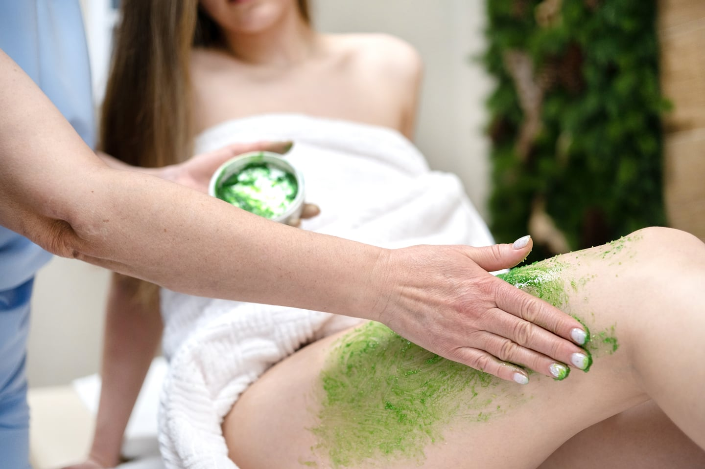
СПА-ритуалыОбертывания и программы в фитобочке6 процедур
«Классический шоколад»
Обертывание в СПА-капсуле: распаривание, кофейный скраб, шоколадная маска и завершающий крем. Программу дополняет чай.
«Ягодное сияние»
Уход за телом со скрабом из виноградных косточек, ягодным обертыванием и завершающей сывороткой. В программу включён чай.
Фитобочка с солью РАПА
Программа «Очищение и лимфодренаж»: прогревание в фитобочке, солевое обертывание и чай. Возможность тепловых процедур уточняется у специалиста.
Фитобочка «Антистресс»
Тепловой уход на основе алтайских трав: фитобочка, травяное обертывание и чай.
Фитобочка с пантогематогеном
Программа «Омоложение и энергия»: прогревание в фитобочке, обертывание с пантогематогеном и чай.
Водорослевое обертывание NeoQi
Уход за телом с водорослевым обертыванием в СПА-капсуле NeoQi. Программу подбирает специалист.
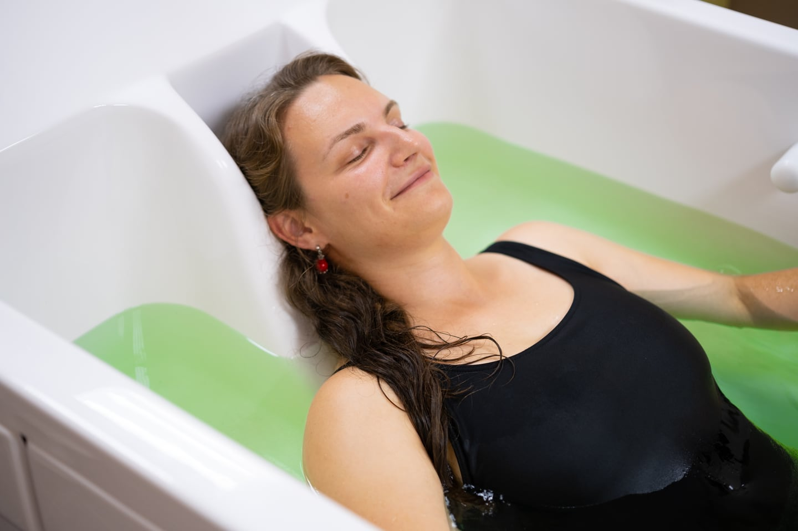
Лечебные ванны и душиВодные процедуры по назначению врача5 процедур
Суховоздушная углекислая ванна
Процедура в специальной установке с подачей углекислого газа, без погружения в воду. Режим и курс назначает врач.
Бишофитная минеральная ванна
Ванна с добавлением минерального состава на основе бишофита. Температуру, длительность и курс определяет врач.
Йодобромная ванна
Лечебная ванна с йодобромным составом. Проводится по назначению врача с индивидуальным подбором параметров.
Хвойная ароматическая ванна
Ванна с хвойным концентратом. Температура воды, продолжительность процедуры и курс подбираются индивидуально.
Лечебные души
Циркулярный душ, душ Виши, восходящий душ и душ Шарко. Подходящий вид водной процедуры определяет врач.
МассажиРучные и водные массажные техники5 процедур
Подводный душ-массаж
Массаж струёй воды в ванне с пресной водой. Напор, направление струи и температуру регулирует медицинский персонал.
Классический массаж спины
Ручной массаж грудного и поясничного отделов спины. Область и интенсивность воздействия определяются после консультации.
Массаж области позвоночника
Ручной массаж области позвоночника по индивидуальному назначению. Перед процедурой необходима консультация специалиста.
Массаж гуаша головы
Массаж головы специальными скребками. Технику и интенсивность воздействия подбирает специалист.
Массаж гуаша спины с банками
Сочетание массажа скребками и баночной техники. Интенсивность и возможность проведения обсуждаются со специалистом.
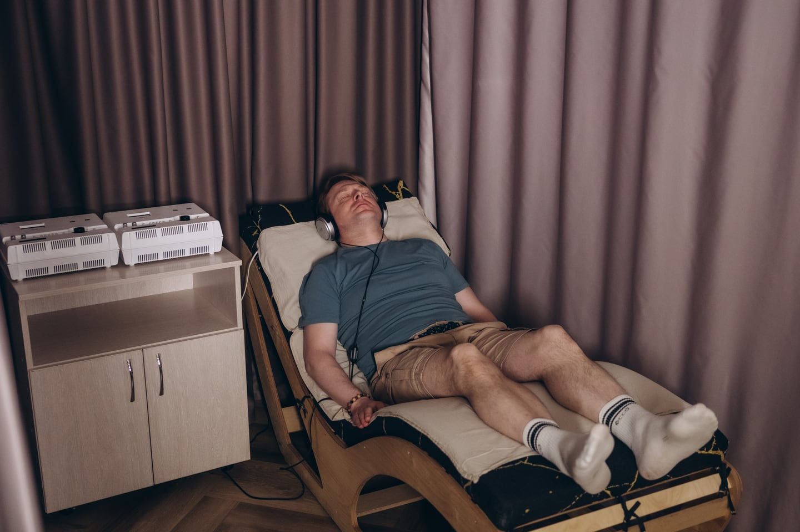
ПсихотерапияСпокойная обстановка и внимание к себе2 процедуры
Аромамузыкотерапия
Сеанс в спокойной обстановке с музыкой и ароматическими композициями. Возможность проведения обсуждается с врачом-психотерапевтом.
Электросон
Аппаратная процедура с применением низкочастотного импульсного тока. Проводится по назначению врача.
Профильные процедурыГастроэнтерология, неврология, гинекология3 профиля лечения
Гастроэнтерология
Микроклизмы
Процедуры с травяными составами, минеральной водой, пантогематогеном и «Бифидум БАГ». Конкретный состав назначает врач.
Дуоденальное зондирование
Порядок проведения, подготовку и возможность назначения уточните у врача-гастроэнтеролога.
Тюбаж
Процедура с приёмом минеральной воды и тепловым воздействием по назначению врача. Требует предварительной оценки показаний и противопоказаний.
Неврология и опорно-двигательный аппарат
Гинекология
Внутриполостные орошения минеральной водой
Местная гинекологическая процедура с минеральной водой. Назначается после консультации акушера-гинеколога.
Процедуры на аппарате «Интрамаг»
Методику, показания и параметры процедуры уточните у акушера-гинеколога санатория.
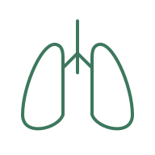
Ингаляционные процедурыИнгаляции и сильвинитовая спелеотерапия3 процедуры
Ингаляции
Вдыхание назначенных врачом лекарственных средств в виде аэрозоля с помощью небулайзера. Препарат и режим процедуры подбираются индивидуально.
Сильвинитовая спелеотерапия
Сеансы в специальной комнате, облицованной природной калийной солью — сильвинитом. Перед курсом необходима консультация врача.
Оксигенотерапия
Формат процедуры, показания и продолжительность уточните у лечащего врача.
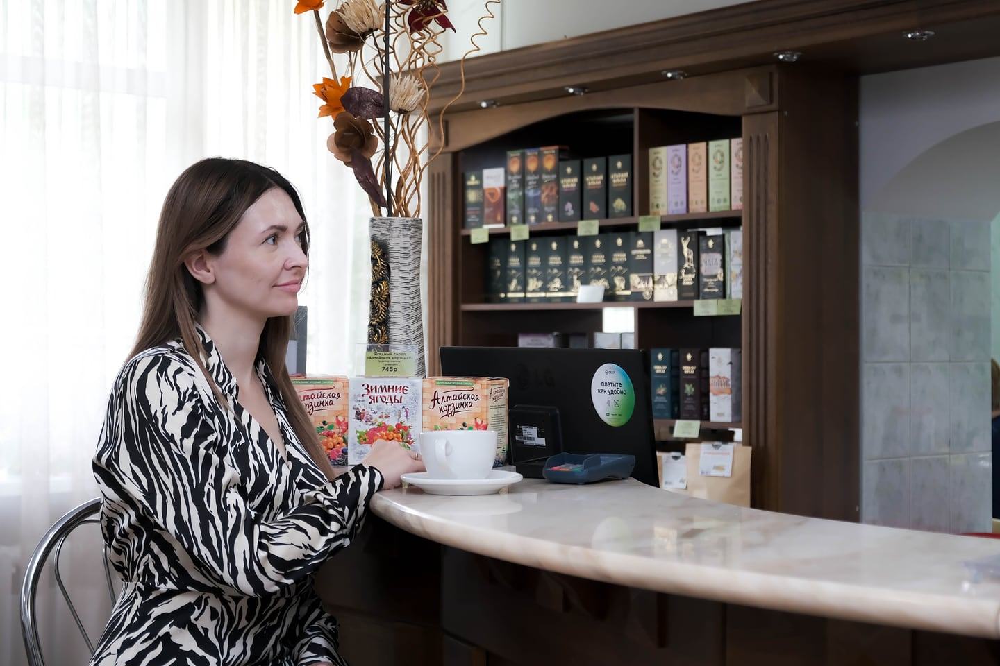
ФитотерапияФитобочка и травяные напитки2 процедуры
Мини-сауна — фитобочка
Прогревание в кедровой фитобочке с травяным паром. Перед посещением необходима консультация врача.
Фиточай
Ассортимент фиточаёв и подходящий состав можно уточнить в фитобаре и у лечащего врача.
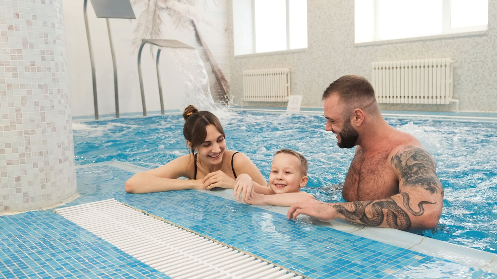
Оздоровительные процедурыДвижение, вода и курортный отдых5 процедур
Акватермальный комплекс
Закрытый бассейн с гидромассажными установками и термальная зона: турецкий хаммам и финская сауна. Возможность посещения уточните у врача.
Групповые занятия ЛФК
Занятия лечебной физкультурой под руководством врача ЛФК и спортивной медицины. Программа включает разминку, основную и заключительную части.
Климатолечение
Режим прогулок и пребывания на свежем воздухе в рамках оздоровительной программы уточните у лечащего врача.
Кислородный коктейль
Состав, условия приёма и возможность включения в программу уточните у специалиста.
Питьевой бювет
В санатории используется лечебно-столовая минеральная вода «Завьяловская». Объём и режим приёма назначает врач.
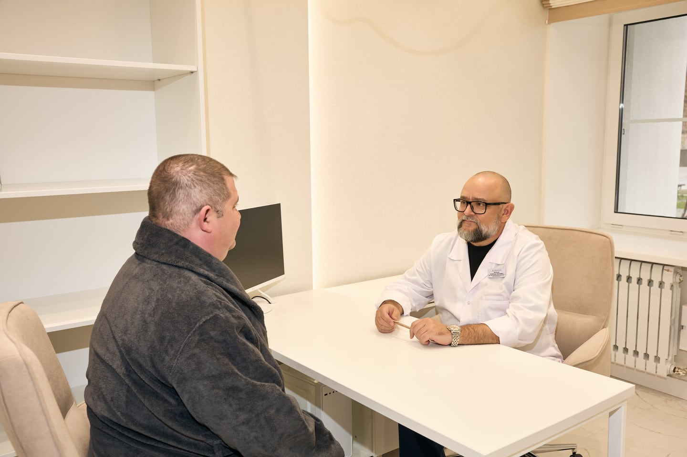
ВАША ИНДИВИДУАЛЬНАЯ ПРОГРАММА
Начните с разговора
со специалистом
Не обязательно разбираться во всех методиках самостоятельно. Врач оценит состояние здоровья, учтёт противопоказания и поможет составить план процедур.